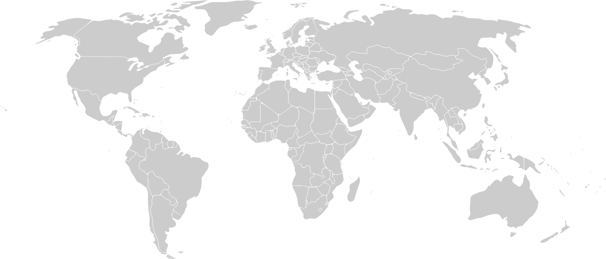

Optical engineer / photographer
Zhaowei
Chen
I am an optical engineer and an amateur photographer. Understanding light, shaping light, and using light are where my professional work and creative practice meet. I graduated from Rose-Hulman Institute of Technology with a B.S., and I am now pursuing a Ph.D. in Optical Sciences at the University of Arizona.
B.S. in Optical Engineering
MEM in Engineering Management
Ph.D. in Optical Science
Where I have been
I am currently at
Tucson, AZ
